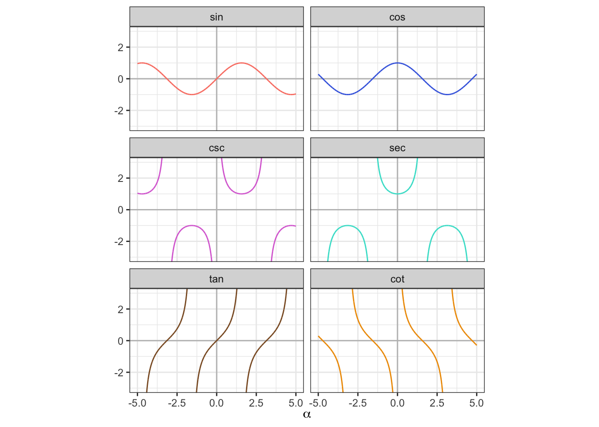

18 Формулы
18.1 Степени и корни
18.1.1 Определения
\[ a^b \overset{\text{def}}{=}\prod_{i=1}^b a_i \]
\[ \sqrt[n]a \overset{\text{def}}{=}b \Leftrightarrow b^n = a \]
18.1.2 Свойства
| \[a^n \cdot a^m = a^{n+m}\] \[\frac{a^n}{a^m} = a^{n-m}\] \[(a^n)^m = a^{nm}\] \[a^0 = 1\] \[a^{-n}=\frac{1}{a^n}\] \[(a \cdot b)^n = a^n \cdot b^n\] \[\Big(\frac{a}{b}\Big)^n = \frac{a^n}{b^n}\] | \[a^{\frac{1}{n}}=\sqrt[n]{a}\] \[a^{\frac{m}{n}}=\sqrt[n]{a^m}\] \[\sqrt[n]{a \cdot b} = \sqrt[n]{a} \cdot \sqrt[n]{b}\] \[(a \cdot b)^{\frac{1}{n}} = a^{\frac{1}{n}} \cdot b^{\frac{1}{n}}\] \[\sqrt[n]{\frac{a}{b}} = \frac{\sqrt[n]{a}}{\sqrt[n]{b}}\] \[\Big(\frac{a}{b}\Big)^{\frac{1}{n}} = \frac{a^{\frac{1}{n}}}{b^{\frac{1}{n}}}\] |
\[ x^n = a \Rightarrow x = \begin{cases} \pm \sqrt[n]{a}, &\quad x \mod 2 = 0 \\ \sqrt[n]{a}, &\quad x \mod 2 = 1 \end{cases} \]
18.2 Логарифмы
18.2.1 Определение
\[\log_b a \overset{\text{def}}{=}c \Leftrightarrow a^c = b, a > 0, b > 0, b \neq 1\]
18.2.2 Свойства
| \[\log_a a = 1\] \[\log_c(ab) = \log_c a + \log_c b\] \[\log_c\Big(\frac{a}{b}\Big) = \log_c a - \log_c b\] | \[\log_c 1 = 0\] \[\log_c a^b = b \log_c a\] \[\log_{c^b} a = \frac{1}{b} \log_c a\] |
18.3 Модуль
\[ |a| = \begin{cases} a, &a \geq 0 \\ -a, &a < 0 \end{cases} \]
\[|x| \leq a \Rightarrow -a \leq x \leq a \Leftrightarrow x \in [-a, a]\]
\[|x| \geq a \Rightarrow x \leq -a \wedge x \geq a \Leftrightarrow x \in (-\infty, -a] \cup [a, +\infty)\]
18.4 Тригонометрия
\[ \sec \alpha = \frac{1}{\cos \alpha} \qquad \csc \alpha = \frac{1}{\sin \alpha} \qquad \tan \alpha = \frac{\sin \alpha}{\cos \alpha} \qquad \cot \alpha = \frac{\cos \alpha}{\sin \alpha} \]
18.4.1 Основное тригонометрическое тождество
\[ \sin^2 \alpha + \cos^2 \alpha = 1 \]
\[ \sin \alpha = \pm \sqrt{1 - \cos^2 \alpha} \qquad \cos \alpha = \pm \sqrt{1 - \sin^2 \alpha} \]
\[ 1 + \cot^2 \alpha = \csc^2 \alpha \qquad \tan^2 \alpha + 1 = \sec ^2 \alpha \]
\[ \sec^2 \alpha + \csc^2 \alpha = \sec^2 \alpha \cdot \csc^2 \alpha \]
18.4.2 Отражения
КАРТИНКА
18.4.2.1 Относительно \(\phi = 0\)
Выражает свойство чётности функции1.
| \[\sin (-\alpha) = -\sin \alpha\] \[\tan (-\alpha) = -\tan \alpha\] \[\sec (-\alpha) = \sec \alpha\] | \[\cos (-\alpha) = \cos \alpha\] \[\cot (-\alpha) = -\cot \alpha\] \[\csc (-\alpha) = -\csc \alpha\] |
18.4.2.2 Относительно \(\phi = \frac{\pi}{4}\)
| \[\sin (\frac{\pi}{2}-\alpha) = \cos \alpha\] \[\tan \Big(\frac{\pi}{2}-\alpha\Big) = \cot \alpha\] \[\sec \Big(\frac{\pi}{2}-\alpha\Big) = \csc \alpha\] | \[\cos \Big(\frac{\pi}{2}-\alpha\Big) = \sin \alpha\] \[\cot \Big(\frac{\pi}{2}-\alpha\Big) = \tan \alpha\] \[\csc \Big(\frac{\pi}{2}-\alpha\Big) = \sec \alpha\] |
18.4.2.3 Относительно \(\phi = \frac{\pi}{2}\)
| \[\sin (\pi-\alpha) = \sin \alpha\] \[\tan (\pi-\alpha) = -\tan \alpha\] \[\sec (\pi-\alpha) = -\sec \alpha\] | \[\cos (\pi-\alpha) = -\cos \alpha\] \[\cot (\pi-\alpha) = -\cot \alpha\] \[\csc (\pi-\alpha) = \csc \alpha\] |
18.4.2.4 Относительно \(\phi = \frac{3\pi}{4}\)
| \[\sin \Big(\frac{3\pi}{2}-\alpha\Big) = -\cos \alpha\] \[\tan \Big(\frac{3\pi}{2}-\alpha\Big) = \cot \alpha\] \[\sec \Big(\frac{3\pi}{2}-\alpha\Big) = -\csc \alpha\] | \[\cos \Big(\frac{3\pi}{2}-\alpha\Big) = -\sin \alpha\] \[\cot \Big(\frac{3\pi}{2}-\alpha\Big) = \tan \alpha\] \[\csc \Big(\frac{3\pi}{2}-\alpha\Big) = -\sec \alpha\] |
18.4.2.5 Относительно \(\phi = \pi\)
| \[\sin (2\pi - \alpha) = -\sin \alpha = \sin (-\alpha)\] \[\tan (2\pi - \alpha) = -\tan \alpha = \tan (-\alpha)\] \[\sec (2\pi - \alpha) = \sec \alpha = \sec (-\alpha)\] | \[\cos (2\pi - \alpha) = \cos \alpha = \cos (-\alpha)\] \[\cot (2\pi - \alpha) = -\cot \alpha = \cot (-\alpha)\] \[\csc (2\pi - \alpha) = -\csc \alpha = \csc (-\alpha)\] |
18.4.3 Сдвиг
Так как все тригонометрические функции периодические, результат сдвига функции определяется её периодом. Для функций \(\sin, \cos, \sec\) и \(\csc\) период равен \(2\pi\). Для \(\tan\) и \(\cot\) он составляет \(\pi\).
18.4.3.1 На четверть периода
| \[\sin \Big(\alpha \pm \frac{\pi}{2}\Big) = \pm\cos \alpha\] \[\tan \Big(\alpha \pm \frac{\pi}{4}\Big) = \frac{\tan \alpha \pm 1}{1 \mp \tan \alpha}\] \[\sec \Big(2\pi - \frac{\pi}{2}\Big) = \mp \csc \alpha\] | \[\cos \Big(\alpha \pm \frac{\pi}{2}\Big) = \mp \sin \alpha\] \[\cot \Big(\alpha \pm \frac{\pi}{4}\Big) = \frac{\cot \alpha \mp 1}{1 \pm \cot \alpha}\] \[\csc \Big(\alpha \pm \frac{\pi}{2}\Big) = \pm \sec \alpha\] |
18.4.3.2 На половину периода
| \[\sin (\alpha + \pi) = -\sin \alpha\] \[\tan \Big(\alpha + \frac{\pi}{2}\Big) = -\cot \alpha\] \[\sec (\alpha + \pi) = -\sec \alpha\] | \[\cos (\alpha + \pi) = -\cos \alpha\] \[\cot \Big(\alpha + \frac{\pi}{2}\Big) = -\tan \alpha\] \[\csc (\alpha + \pi) = -\csc \alpha\] |
18.4.3.3 На полный период
| \[\sin (\alpha + 2\pi) = \sin \alpha\] \[\tan (\alpha + \pi) = \tan \alpha\] \[\sec (\alpha + 2\pi) = \sec \alpha\] | \[\cos (\alpha + 2\pi) = \cos \alpha\] \[\cot (\alpha + \pi) = \cot \alpha\] \[\csc (\alpha + 2\pi) = \csc \alpha\] |
18.4.4 Соотношение знаков
\[ \text{sgn}\sin \alpha = \text{sgn}\csc \alpha \qquad \text{sgn}\cos \alpha = \text{sgn}\sec \alpha \] \[ \text{sgn}\tan \alpha = \text{sgn}\cot \alpha \]
18.4.5 Функции суммы с разности аргументов
\[ \sin (\alpha \pm \beta) = \sin \alpha \cos \beta \pm \cos \alpha \sin \beta \]
\[ \cos (\alpha \pm \beta) = \cos \alpha \cos \beta \mp \sin \alpha \sin \beta \]
\[ \tan (\alpha \pm \beta) = \frac{\tan \alpha \pm \tan \beta}{1 \mp \tan \alpha \tan \beta} \]
\[ \cot (\alpha \pm \beta) = \frac{\cot \alpha \cot \beta \mp 1}{\cot \beta \pm \cot \alpha} \] \[ \sec (\alpha \pm \beta) = \frac{\sec \alpha \sec \beta \csc \alpha \csc \beta}{\csc \alpha \csc \beta \mp \sec \alpha \sec \beta} \]
\[ \csc (\alpha \pm \beta) = \frac{\sec \alpha \sec \beta \csc \alpha \csc \beta}{\sec \alpha \csc \beta \pm \sec \alpha \sec \beta} \]
18.4.6 Формулы двойного аргумента
18.4.7 Формулы тройного аргумента
18.4.8 Формулы половинного аргумента
18.4.9 Формулы понижения степени
18.4.10 Преобразование произведения в сумму
18.4.11 Преобразование суммы в произведение
\[ \sin \alpha \pm \sin \beta = 2 \sin \Big(\frac{\alpha \pm \beta}{2}\Big) \cos \Big(\frac{\alpha \mp \beta}{2}\Big) \]
\[ \cos \alpha + \cos \beta = 2 \cos \Big(\frac{\alpha + \beta}{2}\Big) \cos \Big(\frac{\alpha - \beta}{2}\Big) \]
\[ \cos \alpha - \cos \beta = -2 \sin \Big(\frac{\alpha + \beta}{2}\Big) \sin \Big(\frac{\alpha - \beta}{2}\Big) \]
\[ \tan \alpha \pm \tan \beta = \frac{sin(\alpha + \beta)}{\cos \alpha \cos \beta} \]
Функция называется чётной, если \(f(-x) = f(x)\), и нечётной, если \(f(-x) = -f(x)\).↩︎